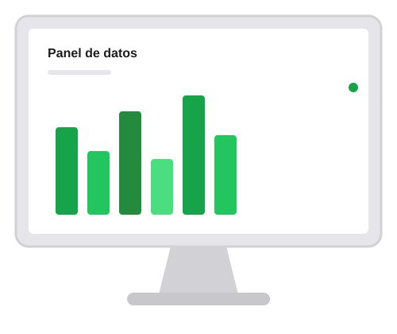
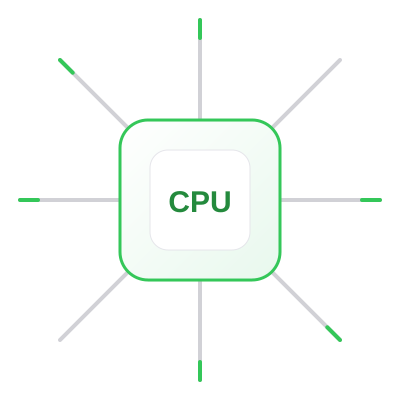
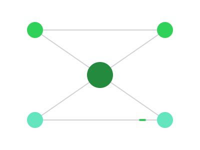

Facultad de Ingeniería · Universidad de la Amazonia
Aprende a crear la tecnología que mueve la Amazonia y el mundo.

El programa
10
Semestres
178
Créditos
Presencial
Modalidad
Alta Calidad
Acreditación
Ingeniero(a) de Sistemas
Campus Florencia, Caquetá
107246

Crea.
Innova.
Soluciona.
Soluciones computacionales para la región Amazónica y el país.
Propósito de formación
El Programa Ingeniería de Sistemas de la Universidad de la Amazonia tiene como principal propósito desarrollar procesos de formación integral de profesionales de la Ingeniería de Sistemas, mediante un currículo que aborda los conocimientos propios de las ciencias básicas, la ingeniería, el campo tecnológico, investigativo, socio-humanista y de formación complementaria.
Que le permitirá interactuar con su entorno e incidir positivamente en él, mediante la creación, innovación y aplicación de soluciones computacionales soportadas en las Tecnologías de la Información y la Comunicación, que contribuyan al fortalecimiento y progreso económico, social, tecnológico y sustentable de la región Amazónica y el país.
Misión y visión

El programa académico Ingeniería de Sistemas de la Universidad de la Amazonia asume como encargo social la formación de profesionales íntegros, con capacidad para crear, innovar, formular y solucionar problemáticas organizacionales y productivas, apoyados en el desarrollo de sistemas de información soportados en las diferentes tecnologías informáticas, con el propósito de contribuir al desarrollo social, económico y tecnológico de la región amazónica y del país.

Ingeniería de Sistemas será un programa académico en permanente acreditación académica y social, líder en la formación integral de profesionales competentes en el campo académico, investigativo y humanístico; comprometidos con el desarrollo tecnológico de la región amazónica y del país, apoyados en tecnologías de información.
Perfil de egreso
El Ingeniero de Sistemas de la Universidad de la Amazonia es un profesional que comprende las dinámicas del entorno, reconociendo las implicaciones y las responsabilidades legales, profesionales, éticas, sociales, económicas y culturales del ejercicio de su profesión. Así mismo, reconoce que la evolución constante de su disciplina y las condiciones cambiantes del entorno hacen necesario implementar estrategias autónomas de aprendizaje continuo, orientadas a su perfeccionamiento profesional.
Ingeniería de software
SQL
Bases de datos
</>
Web y móvil
Redes y sistemas
Inteligencia computacional
Investigación y emprendimiento
+Investiga
+Emprende
+Innova
Plan de estudios · Pensum 2020
Ciencias básicas
36 créditos · 20%
Básicas de ingeniería
35 créditos · 20%
Ingeniería aplicada
77 créditos · 43%
Socio-humanísticas
20 créditos · 11%
Opción de grado
10 créditos
I
18 créditos
II
17 créditos
III
17 créditos
IV
18 créditos
V
18 créditos
VI
18 créditos
VII
18 créditos
VIII
18 créditos
IX
18 créditos
X
18 créditos
Acuerdo 44 del 02 de diciembre de 2020, por el cual se aprueba el nuevo plan de estudios y el plan de transición del programa.
creditos = 0
for semestre in range(1, 11):
creditos = creditos + aprobar(semestre)
# creditos = 178
print("Ingeniero de Sistemas")|
Aspirantes
2
Sigue la guía oficial para inscribirte como estudiante nuevo.
Ver instructivo ›La inscripción es válida únicamente para el periodo y programa académico respectivo y su valor no es reembolsable, salvo que el programa no se pueda desarrollar por circunstancias atribuibles a la Institución (Artículos 16 y 17, Acuerdo 09 de 2007, CSU).
Coordinadora
Paula Andrea Chica Murcia
Teléfono
320 454 1936
Correo
pisistemas@uniamazonia.edu.co
Ubicación
Campus Florencia, barrio El Porvenir, bloque administrativo, primer piso.